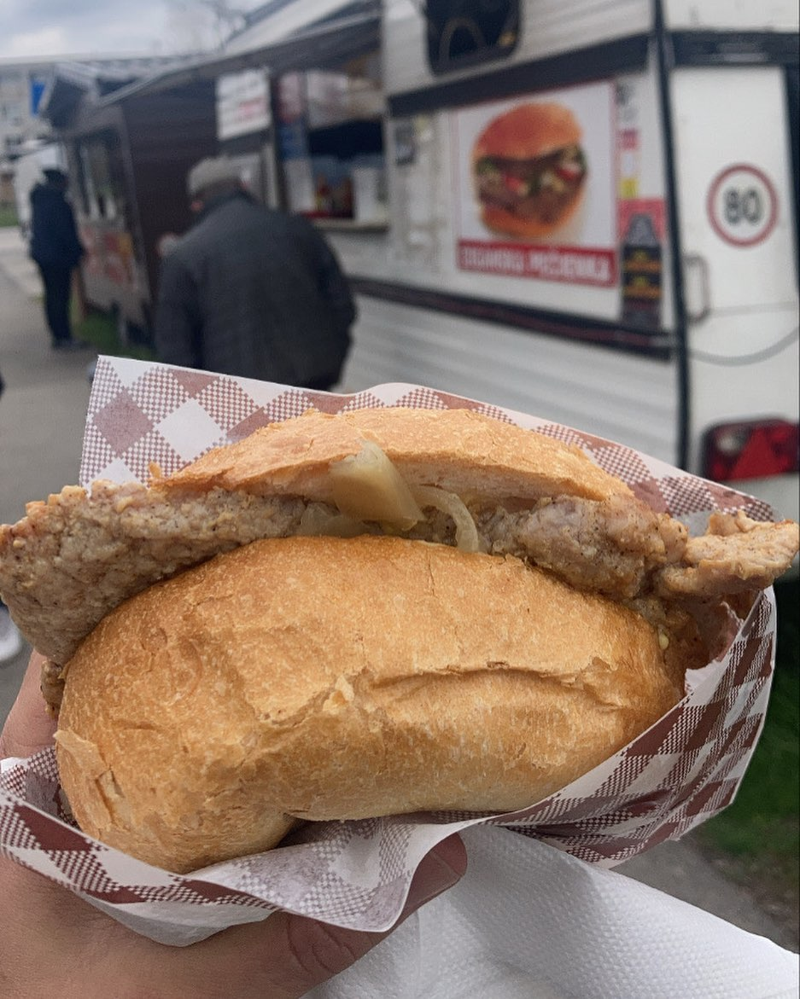

Cigánska pečienka podľa @senecfornia — Normy Jedál
Každý piatok pred “Plecháčom” na Sokolskej ulici.
Bravčová🐖 či kuracia 🐥 cigánska pečienka s horčicou, dusenou cibuľou 🧅 vo vždy čerstvej žemli🥯. Jednoducho cigánska je kráľovnou slovenského streetfoodu. #senecfornia #ciganskapecienka #cigánskapečienka #senec #streetfood #slovakstreetfood